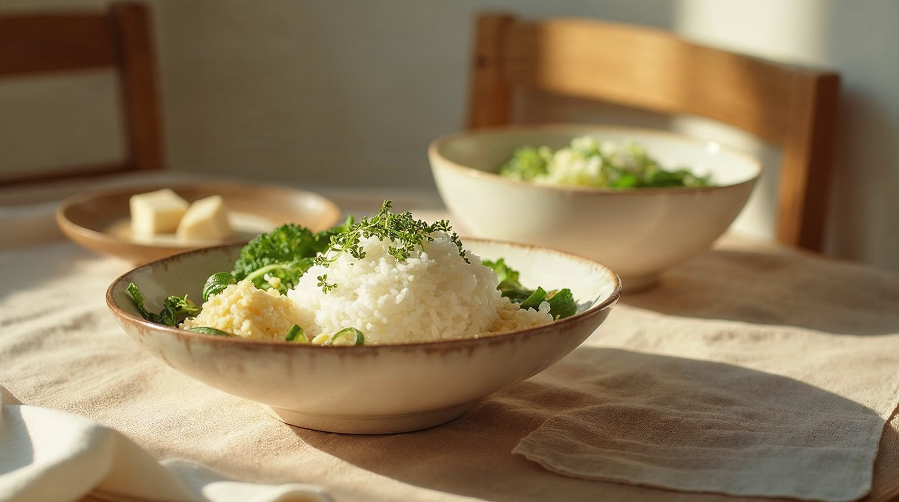
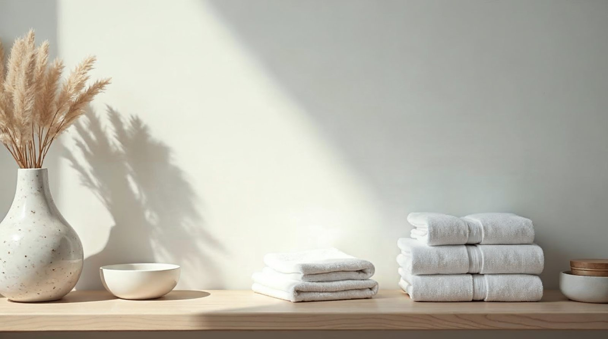
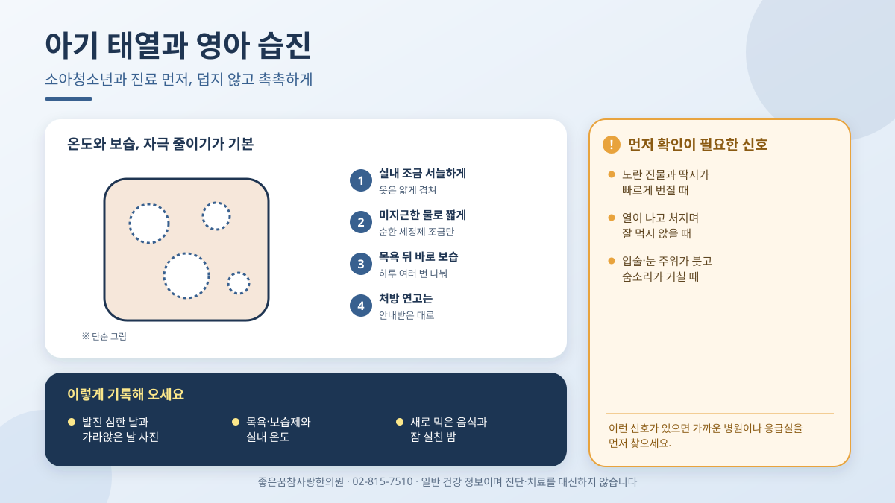

이종호 한의사 감수좋은꿈참사랑한의원 대표원장 (한의사 면허번호 19769)발행 2026-11-26 · 수정 2026-11-26
이 글의 차례
목욕을 마치고 아기를 수건으로 감싸 안았는데, 볼이 유난히 붉습니다. 손끝으로 쓸어 보면 오돌토돌한 것이 만져지고, 아기는 얼굴을 이불에 자꾸 비빕니다. 어른들은 "태열이네, 크면 없어져" 하시고, 인터넷을 찾아보면 아토피라는 말까지 나옵니다. 부모 마음은 어느 말을 믿어야 할지 몰라 흔들립니다.
진료실에서 젊은 부모님께 이런 질문을 종종 받습니다. 주로 부모님 진료를 받으러 오셨다가 휴대폰 속 아기 사진을 보여 주시며 조심스럽게 물으십니다. 사진 속 작은 볼을 보면 얼마나 마음이 쓰이셨을지 짐작이 됩니다.
이 글에서는 흔히 태열이라고 부르는 아기 피부 발진이 어떤 것들을 함께 가리키는지, 그리고 집에서 무엇을 살피면 좋은지를 정리해 보려 합니다. 다만 처음부터 분명히 말씀드리고 싶은 것이 있습니다. 아기 피부에 발진이 생기면 소아청소년과 진료가 먼저입니다.
태열이라는 말은 무엇을 가리키나요
태열은 의학 진단명이라기보다 아기 얼굴이나 몸에 생기는 붉은 발진을 두루 부르는 생활 속 말입니다. 예부터 엄마 배 속에서 받은 열이 피부로 나온다고 여겨 붙은 이름입니다. 그래서 한 단어 안에 서로 다른 피부 상태가 섞여 있습니다.
흔히 태열이라고 부르는 것 가운데에는 땀이 빠져나가지 못해 생기는 땀띠, 머리와 눈썹에 노란 비늘이 앉는 지루피부염, 생후 몇 주 무렵 얼굴에 좁쌀처럼 올라오는 신생아 여드름, 그리고 가렵고 건조하게 붉어지는 영아 습진이 있습니다. 이름은 하나지만 살피는 방법은 조금씩 다릅니다.
이 가운데 영아 습진은 아토피 피부염의 초기 모습과 겹치기도 합니다. 그렇다고 영아 습진이 있는 아기가 모두 아토피 피부염으로 이어지는 것은 아닙니다. 지금 보이는 발진이 어떤 쪽에 가까운지 소아청소년과에서 한 번 확인받아 두면 집에서 무엇을 해야 할지가 훨씬 분명해집니다.
비슷해 보이는 발진은 이렇게 다릅니다
땀띠는 목, 겨드랑이, 기저귀 둘레, 등처럼 땀이 차기 쉬운 곳에 작고 붉은 좁쌀이나 맑은 물집처럼 올라옵니다. 옷을 가볍게 하고 시원하게 해 주면 하루 이틀 사이에 잦아드는 경우가 많습니다.
지루피부염은 머리, 눈썹, 귀 뒤, 코 옆에 기름기 있는 노란 비늘이나 딱지가 앉는 모습입니다. 대개 아기가 크게 가려워하지 않습니다. 신생아 여드름은 볼과 이마에 좁쌀 같은 붉은 점이 올라오는데, 이것도 대부분 시간이 지나며 가라앉습니다.
영아 습진은 볼, 이마, 팔다리 바깥쪽처럼 드러난 곳이 거칠고 붉게 일어나며, 아기가 얼굴을 이불이나 엄마 옷에 비비고 잠을 설치는 모습이 함께 보이곤 합니다. 진물이 나거나 딱지가 앉기도 합니다. 가려움과 건조함이 함께 있다는 점이 다른 발진과 구분되는 단서입니다.
왜 아기 피부는 쉽게 붉어질까요
아기 피부는 어른보다 훨씬 얇고, 수분을 붙잡아 두는 겉 장벽이 아직 단단하지 않습니다. 그래서 같은 환경에서도 수분이 쉽게 빠져나가고, 바깥 자극에 예민하게 반응합니다. 침, 젖, 땀, 마찰처럼 어른에게는 별일 아닌 것들이 아기 볼에는 자극이 됩니다.
땀샘도 아직 성숙하지 않아서 덥게 입히거나 실내가 따뜻하면 땀이 피부 아래에 갇혀 땀띠가 생기기 쉽습니다. 특히 겨울에 난방을 세게 하고 옷을 겹겹이 입히면 건조함과 더움이 한꺼번에 겹쳐 피부가 더 붉어지기도 합니다.
가족 가운데 아토피 피부염, 비염, 천식이 있는 경우 아기 피부도 예민한 경향을 보일 수 있습니다. 이것은 부모의 잘못이 아니라 타고난 피부 성질의 차이입니다. 그만큼 보습과 온도 관리를 조금 더 꼼꼼히 챙겨 주면 됩니다.
한의학의 태열이라는 말에는 아기 몸에 열이 많다는 관찰이 담겨 있습니다. 이것은 오래된 설명 방식이고, 지금 진찰에서는 발진의 모양과 위치, 가려움, 잠과 수유 상태를 함께 보며 소아청소년과의 판단을 먼저 따릅니다.
먼저 이렇게 여쭙니다
부모님이 아기 피부 이야기를 꺼내시면 저는 소아청소년과 진료를 받으셨는지, 어떤 설명과 연고를 받으셨는지부터 여쭙니다. 그 뒤로 함께 정리해 보는 질문은 이렇습니다.
- 발진이 처음 보인 때와 주로 생기는 자리는 어디인가요?
- 아기가 얼굴을 비비거나 긁으려 하고, 그 때문에 잠을 설치나요?
- 진물이나 노란 딱지가 생긴 적이 있나요?
- 목욕은 얼마나 자주, 어떤 물 온도로, 무엇을 써서 하나요?
- 실내 온도와 습도, 아기 옷은 어떻게 입히시나요?
- 수유는 모유인지 분유인지, 이유식을 시작했는지요?
- 가족 가운데 아토피 피부염이나 비염, 천식이 있는 분이 있나요?
모든 질문에 정확히 답하지 못하셔도 괜찮습니다. 발진이 심할 때와 가라앉았을 때 찍은 사진 몇 장만 있어도 이야기가 훨씬 쉬워집니다.
일상에서 먼저 해 볼 수 있는 것
아기 피부 관리의 기본은 덥지 않게, 건조하지 않게, 자극은 적게입니다. 거창한 제품보다 매일 반복하는 작은 습관이 더 중요합니다.
- 실내는 조금 서늘하다 싶을 만큼, 습도는 적당히 유지하기
- 옷은 면처럼 부드러운 소재로 얇게 겹쳐 입히기
- 목욕은 미지근한 물로 짧게, 세정제는 순한 것을 조금만
- 목욕 뒤 물기를 톡톡 눌러 닦고 몇 분 안에 보습제 바르기
- 침이나 젖이 묻은 볼은 부드러운 천에 물을 적셔 살살 닦기
- 손톱을 짧고 둥글게 다듬고, 잘 때는 얇은 손싸개 활용하기
보습제는 한 번에 많이 바르기보다 하루 여러 번 나눠 바르는 것이 좋습니다. 특히 목욕 뒤와 자기 전에는 꼭 챙겨 주세요. 새 보습제는 처음에 작은 부위에 발라 보고 하루 정도 지켜본 뒤 넓게 쓰시길 권합니다.
이불이나 베개 커버, 아기 옷을 빨 때는 세제를 충분히 헹궈 내는 것이 좋습니다. 향이 강한 섬유유연제는 아기 피부에 자극이 될 수 있습니다. 어른이 아기 볼에 자주 얼굴을 비비는 것도 수염이나 화장품이 자극이 될 수 있으니 살짝 조심해 주세요.
침 발진과 기저귀 발진도 함께 봅니다
이가 나기 시작하거나 손가락을 자주 빠는 아기는 입 주변과 턱, 목 주름에 침이 늘 고여 있습니다. 침이 마르고 젖기를 반복하면 피부가 붉고 거칠어지는데, 이것을 태열과 헷갈리기도 합니다. 부드러운 천으로 침을 자주 눌러 닦고, 닦은 뒤 얇게 보습제를 발라 두면 피부를 보호하는 데 보탬이 됩니다.
기저귀 발진은 소변과 대변이 피부에 오래 닿고 기저귀가 쓸리면서 생깁니다. 기저귀를 자주 갈고, 엉덩이를 미지근한 물로 씻은 뒤 충분히 말려서 채우는 것이 기본입니다. 접힌 주름 사이까지 붉고 작은 점이 번진다면 곰팡이가 함께 있을 수 있으니 소아청소년과에서 확인받으세요.
계절마다 아기 피부는 다르게 반응합니다
여름에는 땀과 습기 때문에 땀띠와 짓무름이 잘 생기고, 겨울에는 난방과 찬바람 때문에 건조함이 앞섭니다. 같은 아기라도 계절이 바뀌면 관리의 무게중심이 달라집니다. 여름에는 시원하고 보송하게, 겨울에는 촉촉하고 덥지 않게를 기억해 두시면 됩니다.
겨울 외출 때는 찬바람에 볼이 트기 쉬우니 나가기 전에 보습제를 조금 두껍게 발라 주세요. 외출에서 돌아와 따뜻한 실내에 들어오면 볼이 금세 달아오르는데, 이때 겉옷을 바로 벗겨 땀이 차지 않게 해 주는 것도 작지만 쓸모 있는 습관입니다.
환절기에는 아침저녁 기온 차가 커서 옷을 입히는 일이 까다롭습니다. 아기 목덜미나 등에 손을 넣어 보아 땀으로 축축하면 한 겹 덜 입히고, 손발이 차더라도 등이 따뜻하면 크게 걱정하지 않으셔도 됩니다.

음식을 끊어야 할까요
아기 피부가 붉어지면 엄마가 먹은 음식 때문은 아닐까 걱정하며 이것저것 끊어 보는 분이 많습니다. 하지만 근거 없이 여러 음식을 한꺼번에 줄이면 엄마의 영양이 부족해지고, 아기 피부에는 별 차이가 없는 경우도 많습니다.
특정 음식을 먹은 뒤 몇 시간 안에 입 주변이나 몸이 확 붉어지고 두드러기처럼 부풀었다면 그 음식을 기록해 두고 소아청소년과에서 상의하세요. 음식 알레르기 여부는 필요할 때 검사와 함께 판단합니다.
이유식을 시작한 아기라면 새 음식은 한 번에 한 가지씩, 며칠 간격을 두고 늘려 가면 반응을 살피기 쉽습니다. 이유식 일정 역시 소아청소년과의 안내를 따르시는 것이 좋습니다.
아기가 긁고 비비는 밤에는
가려움이 있는 아기는 밤에 더 자주 깨고 얼굴을 이불에 비빕니다. 잠들기 전 방을 조금 서늘하게 하고, 이불은 두꺼운 것 하나보다 얇은 것 두 장으로 덮어 체온에 맞춰 걷어 낼 수 있게 해 두세요. 자기 전 보습을 한 번 더 해 주는 것도 도움이 됩니다.
아기가 긁기 시작하면 손을 억지로 붙잡기보다 가려운 자리를 손바닥으로 가볍게 눌러 주거나, 시원한 물에 적신 부드러운 천을 잠시 대 주는 방법이 있습니다. 부모도 함께 깨는 밤이 이어지면 지치기 쉬우니, 밤 당번을 나누는 것도 꼭 이야기해 보시길 권합니다. 한 사람이 매일 밤을 다 지키려 하지 않으셔도 괜찮습니다.
스테로이드 연고가 걱정될 때
소아청소년과나 피부과에서 연고를 처방받고도 아기에게 발라도 되는지 망설이시는 부모님이 많습니다. 처방받은 연고는 아기 나이와 피부 상태, 바를 부위에 맞춰 정해진 것입니다. 걱정이 되시면 얼마나, 어디에, 며칠 바르는지를 처방한 선생님께 다시 여쭤 보세요.
연고를 바르다 말다 하면 오히려 발진이 길어질 수 있습니다. 안내받은 기간 동안은 이어 바르고, 좋아진 뒤 줄이는 방법도 함께 안내받으시면 마음이 한결 편해집니다. 한의원에서 처방받은 연고를 끊으라고 말씀드리는 일은 없습니다.
한의원에서 함께 살필 수 있는 경우
- 아기 피부 걱정으로 밤잠을 설치고 지친 부모
- 아기를 안고 달래느라 손목, 어깨, 허리가 아픈 부모
- 소아청소년과 진료 뒤 집에서의 온도와 목욕, 옷 관리를 함께 정리하고 싶은 경우
- 아기가 자라 소아 아토피 피부염이 걱정되어 상담을 원하는 경우
좋은꿈참사랑한의원에서는 영아의 피부 발진을 한의원 치료로 먼저 해결하려 하지 않습니다. 아기 피부는 소아청소년과의 판단을 먼저 따르고, 진찰 없이 영아에게 한약이나 침을 권하지 않습니다.
부모님이 오시면 맥을 짚고 잠, 식사, 몸에서 불편한 곳을 살핀 뒤 지금 상태에 맞는 관리를 정합니다. 모유 수유 중이시면 한약은 수유 여부와 드시는 약을 모두 확인한 뒤 신중히 상의합니다. 아이가 자라 피부 고민이 이어질 때는 그때 아이를 직접 보고 소아청소년과 진료와 나란히 갈 방법을 함께 찾습니다.
이렇게 기록해 오시면 상담이 쉬워집니다
아기 피부는 하루에도 여러 번 달라 보입니다. 기억에 기대기보다 일주일 정도 간단히 기록해 두시면 소아청소년과 진료에서도 큰 도움이 됩니다.
- 발진이 심했던 날과 가라앉은 날의 사진
- 목욕 시각과 물 온도, 쓴 세정제와 보습제
- 실내 온도와 습도, 그날 입힌 옷
- 이유식을 시작했다면 새로 먹은 음식
- 아기가 잠을 설친 밤과 긁거나 비빈 시간
- 처방받은 연고를 바른 날과 부위
사진은 같은 장소, 비슷한 조명에서 찍으면 비교하기 좋습니다. 기록이 쌓이면 '더운 날, 새 옷을 입힌 날 더 붉어지는구나' 같은 연결이 보이기도 합니다.

아기 피부는 자라면서 함께 단단해집니다
아기 피부의 붉은 기운은 부모의 마음을 오래 붙잡습니다. 하지만 많은 경우 피부가 자라며 장벽이 단단해지고, 관리 방법을 익혀 가면서 부모도 한결 여유를 찾게 됩니다.
오늘은 목욕 뒤 보습 한 번, 실내 온도 한 번만 확인해 보세요. 그리고 걱정이 커질 때는 혼자 검색하며 밤을 새우기보다 사진을 들고 소아청소년과에 가서 물어보시길 권합니다. 그것이 아기와 부모 모두를 위한 가장 빠른 길입니다.
이런 증상은 먼저 확인이 필요합니다
- 발진 위에 노란 진물과 딱지가 빠르게 번지거나, 열이 나고 아기가 처지며 잘 먹지 않는 경우
- 무언가를 먹거나 바른 뒤 입술과 눈 주위가 붓고, 숨소리가 거칠어지거나 토하는 경우
이런 신호가 있으면 한의원보다 가까운 병원이나 응급실을 먼저 찾으세요.
함께 읽으면 좋은 글
- 아이 피부가 건조하고 밤마다 긁어서 깨는 소아 아토피 피부염은 어떻게 살피나요?
- 아이 몸에 두드러기가 올라왔다 사라지기를 반복할 때는 무엇을 살피나요?
- 밥 먹을 때나 잠들 때 땀을 유난히 많이 흘리는 아이는 무엇을 살피나요?
- 아이가 잠투정이 심하고 자다가 자주 깰 때는 어떤 점을 살펴보나요?
- 아기를 안고 달래느라 손목과 어깨가 아픈 부모는 자세를 어떻게 점검하나요?

여쭙는 것
- 발진이 처음 보인 때와 주로 생기는 자리는 어디인가요?
- 아기가 얼굴을 비비거나 긁으려 하고, 그 때문에 잠을 설치나요?
- 진물이나 노란 딱지가 생긴 적이 있나요?
생활에서 해 볼 것
- 실내는 조금 서늘하다 싶을 만큼, 습도는 적당히 유지하기
- 옷은 면처럼 부드러운 소재로 얇게 겹쳐 입히기
- 목욕은 미지근한 물로 짧게, 세정제는 순한 것을 조금만
한의원에서 함께 살필 것
- 아기 피부 걱정으로 밤잠을 설치고 지친 부모
- 아기를 안고 달래느라 손목, 어깨, 허리가 아픈 부모
- 소아청소년과 진료 뒤 집에서의 온도와 목욕, 옷 관리를 함께 정리하고 싶은 경우
먼저 확인이 필요한 신호
- 발진 위에 노란 진물과 딱지가 빠르게 번지거나, 열이 나고 아기가 처지며 잘 먹지…
- 무언가를 먹거나 바른 뒤 입술과 눈 주위가 붓고, 숨소리가 거칠어지거나 토하는 경우
한눈에 보는 표
| 구분 | 핵심 |
|---|---|
| 여쭙는 것 | 발진이 처음 보인 때와 주로 생기는 자리는 어디인가요? 아기가 얼굴을 비비거나 긁으려 하고, 그 때문에 잠을 설치나요? |
| 생활에서 해 볼 것 | 실내는 조금 서늘하다 싶을 만큼, 습도는 적당히 유지하기 옷은 면처럼 부드러운 소재로 얇게 겹쳐 입히기 |
| 한의원에서 함께 살필 것 | 아기 피부 걱정으로 밤잠을 설치고 지친 부모 아기를 안고 달래느라 손목, 어깨, 허리가 아픈 부모 |
| 먼저 확인이 필요한 신호 | 발진 위에 노란 진물과 딱지가 빠르게 번지거나, 열이 나고 아기가 처지며 잘 먹지 않는 경우 무언가를 먹거나 바른 뒤 입술과 눈 주위가 붓고, 숨소리가 거칠어지거나 토하는 경우 |
자주 묻는 질문
태열은 크면 저절로 없어지나요?
땀띠나 신생아 여드름, 지루피부염처럼 시간이 지나며 가라앉는 경우가 많습니다. 다만 가렵고 건조한 발진이 이어지면 영아 습진일 수 있으니 소아청소년과에서 확인받으세요.
태열이 있는 아기에게 한약을 먹여도 되나요?
영아는 소아청소년과 진료가 먼저이고, 한의원에서는 진찰 없이 아기에게 한약을 권하지 않습니다. 소아청소년과 진료를 받은 뒤 상담이 필요하면 아기를 직접 보고 신중히 판단합니다.
보습제는 하루에 몇 번 발라야 하나요?
아기 피부 상태에 따라 다르지만 목욕 뒤와 자기 전을 포함해 하루 여러 번 나눠 바르는 것이 좋습니다. 구체적인 횟수는 진료한 선생님의 안내를 따르세요.
모유 수유 중인데 제가 먹는 음식을 끊어야 하나요?
근거 없이 여러 음식을 줄이는 것은 권하지 않습니다. 특정 음식 뒤에 아기 피부가 확 붉어지는 일이 반복되면 기록해 두었다가 소아청소년과에서 상의하세요.
목욕은 매일 시켜도 되나요?
미지근한 물로 짧게 씻기고 바로 보습해 준다면 괜찮은 경우가 많습니다. 피부가 많이 건조하거나 진물이 있을 때는 목욕 방법을 소아청소년과에서 안내받으세요.
좋은꿈참사랑한의원은 재진 때 지난번 이야기부터 이어서 여쭙니다. 진료시간과 예약은 오시는 길에서 확인하세요.
어디서 상담받을 수 있나요?
좋은꿈참사랑한의원은 서울 동작구 만양로2길 2 신성빌딩 3층·5층(서울 동작구 상도동, 7호선 상도역 3번 출구 근처)에 있습니다. 한의사 3명(이종호 대표원장, 조영기 수석진료원장, 정원영 진료원장)이 진료합니다. 진료시간은 평일 09:30~20:00(점심 13:00~14:00), 토·일·공휴일 09:30~15:00이며, 방문 전 전화로 확인을 권합니다. 예약은 네이버 예약, 카카오톡 상담, 전화 02-815-7510로 받습니다.
이 글은 일반적인 건강 정보이며 개인의 진단이나 치료를 대신하지 않습니다. 증상이 있거나 복용 중인 약이 있다면 진료를 통해 확인하세요. 치료 효과는 개인마다 다를 수 있습니다.
작성 기준: 일반적으로 알려져 있는 건강 정보를 참고해 정리했습니다(대표원장 감수). 증상 기록은 1~2주 동안 하루 1회, 비슷한 시간에 적어 오시면 지난 상태와 비교하기 쉽습니다.